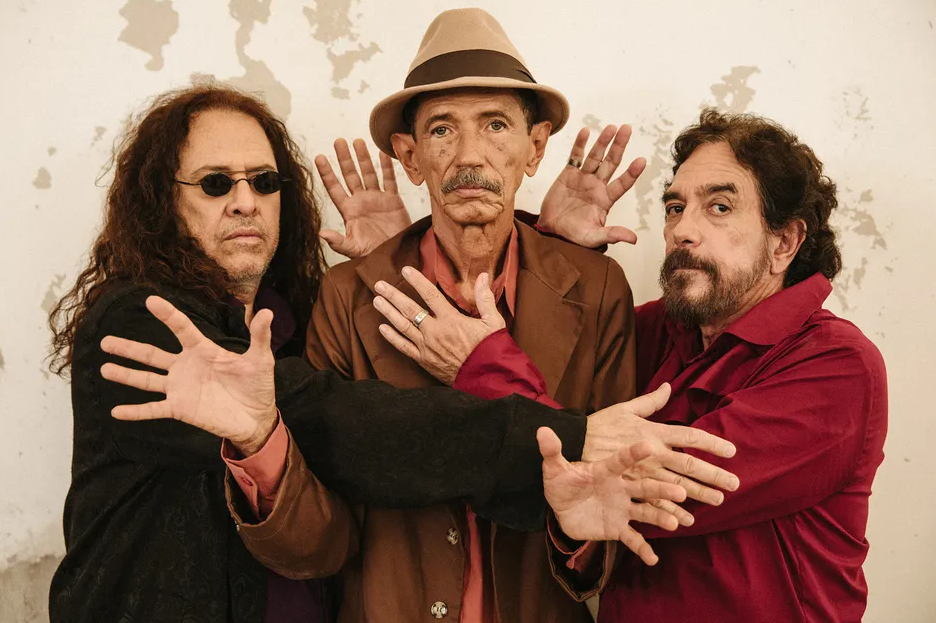

Bandas em Destaque

Ave Sangria
Depoimento de John Doe, guitarrista do Ave Sangria. "Somos uma força da natureza, prontos para sacudir o mundo com nossos riffs poderosos e letras que falam diretamente à alma dos roqueiros."

Devotos
Depoimento de Jane Smith, baterista dos Devotos. "Cada batida das nossas baquetas é como um grito de liberdade. Nossa missão é fazer o público sentir a verdadeira essência do Rock."

Fire Head
Depoimento de Mike Johnson, baixista do Fire Head. "Nossa música é a trilha sonora da rebeldia e da paixão. Cada nota é uma expressão do nosso amor pelo Rock 'n Roll."